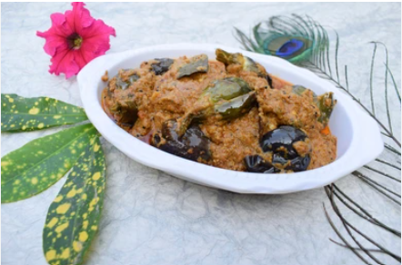

Ingredients
Brinjal-500 gm
Cooking Oil-6 tbsp
Cumin Seeds-1 tbsp
Ginger-Garlic Paste-1 tbsp
Peanut Powder-20 gm
Chopped Onion-1 small pcs
Red Chili Powder-1 tbsp
Turmeric Powder-1 tsp
Garam Masala Powder-1 tsp
Coriander Powder-1 tbsp
Salt-1 tbsp
Tomato Puree-2 large pcs
Chopped Coriander-1 bowl
Curd-2 tbsp
Water-3/4 glass
Procedure
Make 2 vertical cuts to the brinjal.
Heat oil in a pan. Add all brinjal to the pan.Saute them then remove them from the pan.
Now add cooking oil to the pan and heat it.
Add cumin seeds, ginger-garlic paste,peanut powder.Mix well.
Add chopped onion,red chili powder,turmeric powder,garam masala powder,coriander powder,salt.Mix all the masalas well.
Now add tomato puree and mix well.Now add freshly chopped coriander.Mix well.
Add curd and mix well now place sauteed brinjals in the pan.Mix brinjal and masala well.
Add water and mix one final time. Cook until soft.
Baingan masala is ready.